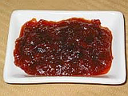

Sambal Bajak

Bahan yang dihaluskan
- 5 buah cabe merah
- 10 buah cabe rawit
- 2 buah tomat
- 4 siung bawang putih
- 1 sdm gula merah
- garam secukupnya
- 2 sdt terasi
Bahan lain
Cara membuat
- Panaskan minyak, tumis bawang merah sampe harum
- Masukkan bahan halus, serai, lengkuas, salam, aduk sampe wangi
- Masukkan air asam dan air, aduk sape susut dengan api kecil
- Masukkan garam, aduk, angkat